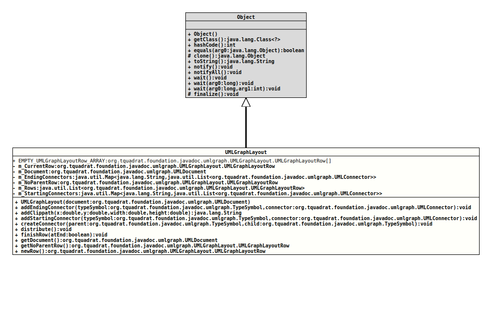

Class UMLGraphLayout
java.lang.Object
org.tquadrat.foundation.javadoc.umlgraph.UMLGraphLayout
@ClassVersion(sourceVersion="$Id: UMLGraphLayout.java 820 2020-12-29 20:34:22Z tquadrat $")
@API(status=INTERNAL,
since="0.0.5")
public final class UMLGraphLayout
extends Object
This class is used to layout the UML graph.
- Author:
- Thomas Thrien (thomas.thrien@tquadrat.org)
- Version:
- $Id: UMLGraphLayout.java 820 2020-12-29 20:34:22Z tquadrat $
- Since:
- 0.0.5
- UML Diagram
-

UML Diagram for "org.tquadrat.foundation.javadoc.umlgraph.UMLGraphLayout"
{kind=link}
-
Nested Class Summary
Nested ClassesModifier and TypeClassDescriptionstatic final classThis class is used to layout the UML graph. -
Field Summary
FieldsModifier and TypeFieldDescriptionstatic final UMLGraphLayout.UMLGraphLayoutRow[]An empty array ofUMLGraphLayoutRowobjects.private UMLGraphLayout.UMLGraphLayoutRowThe current row.private final UMLDocumentThe UML document.private final Map<String,List<UMLConnector>> The registry of connectors that will be terminated by the class with the given name.private final UMLGraphLayout.UMLGraphLayoutRowThe row for class objects that do not have parents.private final List<UMLGraphLayout.UMLGraphLayoutRow>The rows for this layout.private final Map<String,List<UMLConnector>> The registry of connectors that will originate at the class with the given name. -
Constructor Summary
Constructors -
Method Summary
Modifier and TypeMethodDescriptionfinal StringaddClippath(double x, double y, double width, double height) Creates a clippath from the given coordinates and add that to the UML document.final voidaddEndingConnector(TypeSymbol typeSymbol, UMLConnector connector) Adds a connector to the registry of connectors ending on the given type symbol.final voidaddStartingConnector(TypeSymbol typeSymbol, UMLConnector connector) Adds a connector to the registry of connectors starting at the given type symbol.final voidcreateConnector(TypeSymbol parent, TypeSymbol child) Creates a connector for the given parent and child.final voidDistribute the elements in the layout.final voidfinishRow(boolean atEnd) Call this method if all elements were added to the current row.final UMLDocumentReturns a reference to theUMLDocumentthis instance of layout was created with.Returns a reference to the row that holds the class objects that does not have parents.newRow()Creates a new row for the layout; it is not yet added.
-
Field Details
-
EMPTY_UMLGraphLayoutRow_ARRAY
An empty array ofUMLGraphLayoutRowobjects. -
m_CurrentRow
The current row. -
m_Document
The UML document. -
m_EndingConnectors
The registry of connectors that will be terminated by the class with the given name. -
m_NoParentRow
The row for class objects that do not have parents. These are the classObjectand all interfaces that do not extend other interfaces. -
m_Rows
The rows for this layout. -
m_StartingConnectors
The registry of connectors that will originate at the class with the given name.
-
-
Constructor Details
-
UMLGraphLayout
Creates a newUMLGraphLayoutobject.- Parameters:
document- The UML document.
-
-
Method Details
-
addEndingConnector
Adds a connector to the registry of connectors ending on the given type symbol.- Parameters:
typeSymbol- The symbol.connector- The connector.
-
addClippath
Creates a clippath from the given coordinates and add that to the UML document.- Parameters:
x- The x coordinate of the upper left corner of the rectangle.y- The y coordinate of the upper left corner of the rectangle.width- The width of the rectangle.height- The height of the rectangle.- Returns:
- The id for the clippath element.
-
addStartingConnector
Adds a connector to the registry of connectors starting at the given type symbol.- Parameters:
typeSymbol- The class symbol.connector- The connector.
-
createConnector
Creates a connector for the given parent and child.- Parameters:
parent- The parent.child- The child.
-
distribute
Distribute the elements in the layout. -
finishRow
Call this method if all elements were added to the current row.- Parameters:
atEnd-trueif the row should be added to the end,falseif it should be added to the begin of the row's list.
-
getDocument
Returns a reference to theUMLDocumentthis instance of layout was created with.- Returns:
- The UML document.
-
getNoParentRow
Returns a reference to the row that holds the class objects that does not have parents.- Returns:
- The row for parent-less class objects.
-
newRow
Creates a new row for the layout; it is not yet added.- Returns:
- The new row.
-